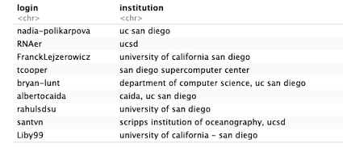
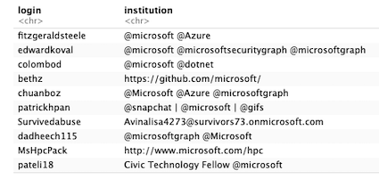
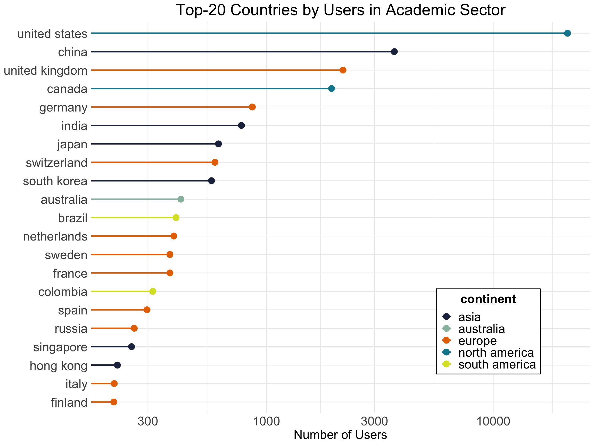
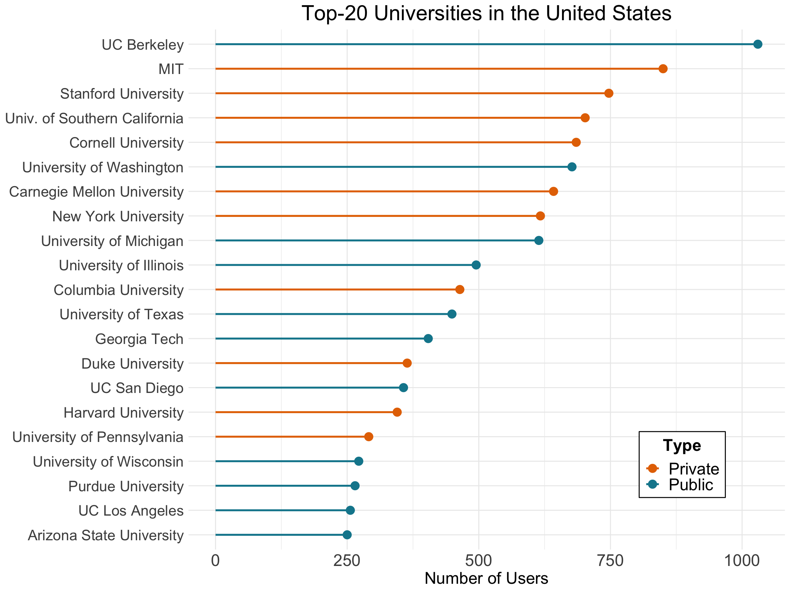
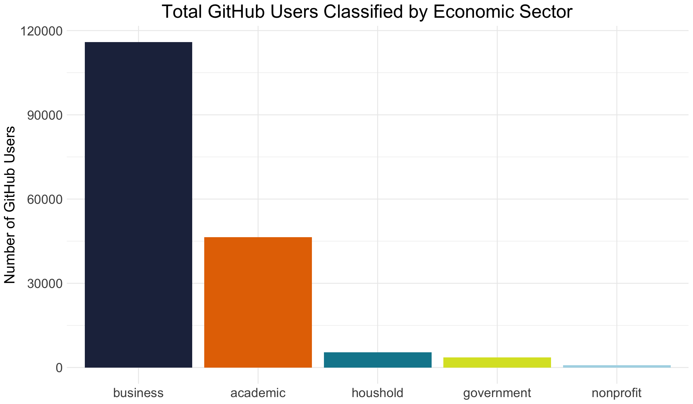
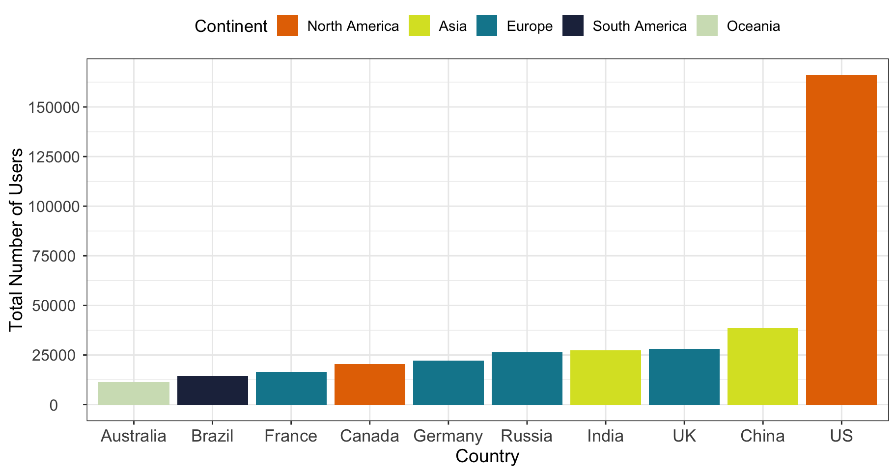

Sectoring Open Source Software
Symposium Presentation of the 2020 DSPG Project
Sectoring Open Source Software:
Where Do GitHub Contributions Come From?
Crystal Zang, Morgan Klutzke, Daniel Bullock,
Brandon Kramer, Gizem Korkmaz, and José Bayoán Santiago Calderón
Sponsors: Carol Robbins (NCSES) and Ledia Guci (NCSES)
Why Study Open Source Software?
Current NCSES and other economic indicators do not measure
the scope and impact of OSS developed outside the business sector
Sectoring Open Source Software
Our two main goals for the 2020 DSPG Summer Project were to:
(1) Classify GitHub users into one of five economic sectors
(Academic, Business, Household, Government and Non-Profit)
(2) Examine where GitHub users are located around the world
Data
We used GHTorrent data to categorize users into sectors
(dataset of ~2.1 million GitHub users with email, affiliation and location data)
We also used multiple publicly available datasources to help
match users to existing organizations within each sector
(see our Data & Methods page for more details)
Methods
 
We relied on aspects of computational text analysis to standardize entries
(regular expressions, list matching, and bigrams)
Sectoring Results
Academic Sector

US-based academic institutions are the largest producers of OSS

Most of the top OSS-producing universities are close to
major tech hubs in CA, MA, NY, TX and WA
Business Sector
Geographic Analyses

Most GitHub users based in the US are around 4 times higher than in China

Within the US, most GitHub users are based on the coasts and near major tech hubs

Silicon Valley is the world's most prominent OSS hotspot
followed by London, NYC, Moscow and Beijing

Click to see a video or visit our interactive map of GitHub users around the world
Main Findings
The majority of users come from the business sector followed
by the academic, government and household sectors
Most OSS production seems to be coming from the business sector
Most GitHub users are based in the US (both in general and in the academic sector)
Major universities in California may also be benefitting
from the proximity of Silicon Valley's OSS production
Challenges & Future Directions
Hoping to scrape more user data to improve classification accurary
Improving the government, non-profit and household classification systems
Determine how to classify contributions at the intersection of multiple sectors
Conducting network analysis to understand collaboration tendencies